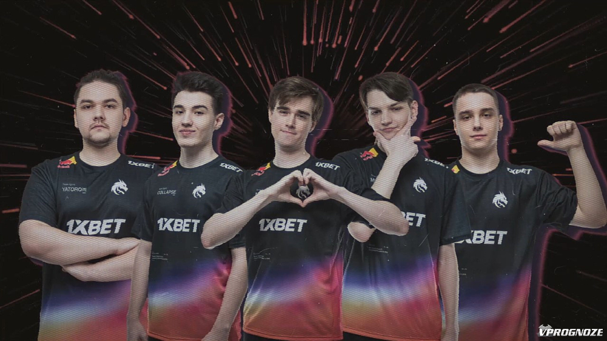

Для чего нужна киберспортивная команда, если вы игрок?
Для начала, команда - это коллектив людей, связанных между собой общими интересами и целями, в нем вы сможете всегда о чем-то поговорить или что-то обсудить.Здесь каждый будет себя чувствовать важным звеном, о котором думают другие участники, ведь одна из главных целей в создании команды-сделать максимально атмосферную обстановку. Также часто в таких командах присутствуют психологи, которые помогают разобраться с проблемами, чтобы вы чувствовали себя превосходно.
Вторая причина заключается в том, что вы сможете развивать свои индивидуальные навыки, а также улучшите свои игровые навыки в командной игре.
Одна из немаловажных причин для людей, которые любят и мечтают путешествовать-турниры проводятся в разных странах мира.
